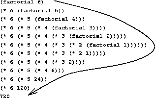

|
We have now considered the elements of programming: We have usedprimitive arithmetic operations, we have combined these operations, andwe have abstracted these composite operations by defining them as compoundprocedures. But that is not enough to enable us to say that we knowhow to program. Our situation is analogous to that of someone who haslearned the rules for how the pieces move in chess but knows nothingof typical openings, tactics, or strategy. Like the novice chessplayer, we don't yet know the common patterns of usage in the domain.We lack the knowledge of which moves are worth making (whichprocedures are worth defining). We lack the experience to predict theconsequences of making a move (executing a procedure).
The ability to visualize the consequences of the actions underconsideration is crucial to becoming an expert programmer, just as itis in any synthetic, creative activity. In becoming an expertphotographer, for example, one must learn how to look at a scene andknow how dark each region will appear on a print for each possiblechoice of exposure and development conditions. Only then can onereason backward, planning framing, lighting, exposure, and developmentto obtain the desired effects. So it is with programming, where weare planning the course of action to be taken by a process and wherewe control the process by means of a program. To become experts, wemust learn to visualize the processes generated by various types ofprocedures. Only after we have developed such a skill can we learnto reliably construct programs that exhibit the desired behavior.
A procedure is a pattern for the local evolution of acomputational process. It specifies how each stage of the process isbuilt upon the previous stage. We would like to be able to makestatements about the overall, or global, behavior of aprocess whose local evolution has been specified by a procedure. Thisis very difficult to do in general, but we can at least try todescribe some typical patterns of process evolution.
In this section we will examine some common “shapes” for processesgenerated by simple procedures. We will also investigate therates at which these processes consume the important computationalresources of time and space. The procedures we will considerare very simple. Their role is like that played by test patterns inphotography: as oversimplified prototypical patterns, rather thanpractical examples in their own right.
|  |
We begin by considering the factorial function, defined by
n! = n · (n - 1) · (n - 2) ⋯ 3 · 2 · 1
There are many ways to compute factorials. One way is to make use ofthe observation that n! is equal to n times (n - 1)! forany positive integer n:n! = n · [(n - 1) · (n - 2) ⋯ 3 · 2 · 1] = n · (n - 1)!
Thus, we can compute n! by computing (n - 1)! and multiplying theresult by n. If we add the stipulation that 1! is equal to 1,this observation translates directly into a procedure:(define (factorial n) (if (= n 1) 1 (* n (factorial (- n 1)))))
We can use the substitution model ofsection 1.1.5 to watch this procedure in actioncomputing 6!, as shown in figure 1.3.
Now let's take a different perspective on computing factorials. Wecould describe a rule for computing n! by specifying that wefirst multiply 1 by 2, then multiply the result by 3, then by 4,and so on until we reach n.More formally, we maintain a running product, together with a counterthat counts from 1 up to n. We can describe the computation bysaying that the counter and the product simultaneously change from onestep to the next according to the rule
product ⟵ counter · product
counter ⟵ counter + 1
and stipulating that n! is the value of the product whenthe counter exceeds n.
|
Once again, we can recast our description as a procedure for computingfactorials:29
(define (factorial n) (fact-iter 1 1 n)) (define (fact-iter product counter max-count) (if (> counter max-count) product (fact-iter (* counter product) (+ counter 1) max-count)))
As before, we can use the substitution model to visualize the processof computing 6!, as shown in figure 1.4.
Compare the two processes. From one point of view, they seem hardlydifferent at all. Both compute the same mathematical function on thesame domain, and each requires a number of steps proportional to nto compute n!. Indeed, both processes even carry out the samesequence of multiplications, obtaining the same sequence of partialproducts. On the other hand, when we consider the “shapes” of thetwo processes, we find that they evolve quite differently.
Consider the first process. The substitution model reveals a shape ofexpansion followed by contraction, indicated by the arrow infigure 1.3. The expansion occurs as theprocess builds up a chain of deferred operations (in this case,a chain of multiplications). The contraction occurs asthe operations areactually performed. This type of process, characterized by a chain ofdeferred operations, is called a recursive process. Carryingout this process requires that the interpreter keep track of theoperations to be performed later on. In the computation of n!,the length of the chain of deferred multiplications, and hence the amountof information needed to keep track of it, grows linearly with n(is proportional to n), just like the number of steps.Such a process is called a linear recursive process.
By contrast, the second process does not grow and shrink. At eachstep, all we need to keep track of, for any n, are the currentvalues of the variables product, counter, and max-count. We call this an iterative process. In general, aniterative process is one whose state can be summarized by a fixednumber of state variables, together with a fixed rule thatdescribes how the state variables should be updated as the processmoves from state to state and an (optional) end test that specifiesconditions under which the process should terminate. In computingn!, the number of steps required grows linearly with n. Such a process iscalled a linear iterative process.
The contrast between the two processes can be seen in another way. Inthe iterative case, the program variables provide a completedescription of the state of the process at any point. If we stoppedthe computation between steps, all we would need to do to resume thecomputation is to supply the interpreter with the values of the threeprogram variables. Not so with the recursive process. In this casethere is some additional “hidden” information, maintained by theinterpreter and not contained in the program variables, whichindicates “where the process is” in negotiating the chain ofdeferred operations. The longer the chain, the more information mustbe maintained.30
In contrasting iteration and recursion, we must be careful not toconfuse the notion of a recursive process with the notion of arecursive procedure. When we describe a procedure as recursive,we are referring to the syntactic fact that the procedure definitionrefers (either directly or indirectly) to the procedure itself. Butwhen we describe a process as following a pattern that is, say,linearly recursive, we are speaking about how the process evolves, notabout the syntax of how a procedure is written. It may seemdisturbing that we refer to a recursive procedure such as fact-iter as generating an iterative process. However, the processreally is iterative: Its state is captured completely by its threestate variables, and an interpreter need keep track of only threevariables in order to execute the process.
One reason that the distinction between process and procedure may beconfusing is that most implementations of common languages (includingAda, Pascal, and C) are designed in such a way that theinterpretation of any recursive procedure consumes an amount of memorythat grows with the number of procedure calls, even when the processdescribed is, in principle, iterative. As a consequence, theselanguages can describe iterative processes only by resorting tospecial-purpose “looping constructs” such as do, repeat,until, for, and while. The implementation of Schemewe shall consider in chapter 5 does not share this defect. It willexecute an iterative process in constant space, even if the iterativeprocess is described by a recursive procedure. An implementation withthis property is called tail-recursive. With a tail-recursiveimplementation, iteration can be expressed using the ordinaryprocedure call mechanism, so that special iteration constructs areuseful only as syntactic sugar.31
Exercise 1.9. Each of the following two procedures defines a method for adding twopositive integers in terms of the procedures inc,which increments its argument by 1, and dec, which decrementsits argument by 1.
(define (+ a b) (if (= a 0) b (inc (+ (dec a) b)))) (define (+ a b) (if (= a 0) b (+ (dec a) (inc b))))
Using the substitution model, illustrate the process generated by eachprocedure in evaluating (+ 4 5). Are these processesiterative or recursive?
Exercise 1.10. The following procedure computes a mathematical function calledAckermann's function.
(define (A x y) (cond ((= y 0) 0) ((= x 0) (* 2 y)) ((= y 1) 2) (else (A (- x 1) (A x (- y 1))))))
What are the values of the following expressions?
(A 1 10) (A 2 4) (A 3 3)
Consider the following procedures, where A is the proceduredefined above:
(define (f n) (A 0 n)) (define (g n) (A 1 n)) (define (h n) (A 2 n)) (define (k n) (* 5 n n))
Give concise mathematical definitions for the functions computed bythe procedures f, g, and h for positive integervalues of n. For example, (k n) computes 5n2.
Another common pattern of computation is called tree recursion.As an example, consider computing the sequence of Fibonacci numbers,in which each number is the sum of the preceding two:
0, 1, 1, 2, 3, 5, 8, 13, 21, …
In general, the Fibonacci numbers can be defined by the rule
We can immediately translate this definition into a recursiveprocedure for computing Fibonacci numbers:
(define (fib n) (cond ((= n 0) 0) ((= n 1) 1) (else (+ (fib (- n 1)) (fib (- n 2))))))
 |
Consider the pattern of this computation. To compute (fib 5),we compute (fib 4) and (fib 3). To compute (fib 4),we compute (fib 3) and (fib 2). In general, the evolvedprocess looks like a tree, as shown in figure 1.5.Notice that the branches split into two at each level (except at thebottom); this reflects the fact that the fib procedure callsitself twice each time it is invoked.
This procedure is instructive as a prototypical tree recursion, but itis a terrible way to compute Fibonacci numbers because it does so muchredundant computation. Notice in figure 1.5 thatthe entire computation of (fib 3) – almost half the work – isduplicated. In fact, it is not hard to show that the number of timesthe procedure will compute (fib 1) or (fib 0) (the numberof leaves in the above tree, in general) is preciselyFib(n + 1). To get an idea of how bad this is, one can show that thevalue of Fib(n) grows exponentially with n. More precisely(see exercise 1.13), Fib(n) is the closestinteger to φn /√5, where
φ = (1 + √5)/2 ≈ 1.6180
is the golden ratio, which satisfies the equation
φ2 = φ + 1
Thus, the process uses a number of steps that grows exponentiallywith the input. On the other hand, the space required grows onlylinearly with the input, because we need keep track only of whichnodes are above us in the tree at any point in the computation. Ingeneral, the number of steps required by a tree-recursive process will beproportional to the number of nodes in the tree, while the spacerequired will be proportional to the maximum depth of the tree.
We can also formulate an iterative process for computing theFibonacci numbers. The idea is to use a pair of integers a andb, initialized to Fib(1) = 1 and Fib(0) = 0,and to repeatedly apply the simultaneoustransformations
a ⟵ a + b b ⟵ a
It is not hard to show that, after applying this transformation ntimes, a and b will be equal, respectively, to Fib(n + 1) and Fib(n). Thus, we can compute Fibonacci numbers iteratively usingthe procedure(define (fib n) (fib-iter 1 0 n)) (define (fib-iter a b count) (if (= count 0) b (fib-iter (+ a b) a (- count 1))))
This second method for computing Fib(n) is a linear iteration. Thedifference in number of steps required by the two methods – one linear in n,one growing as fast as Fib(n) itself – is enormous, even forsmall inputs.
One should not conclude from this that tree-recursive processes areuseless. When we consider processes that operate on hierarchicallystructured data rather than numbers, we will find that tree recursionis a natural and powerful tool.32 But even in numerical operations,tree-recursive processes can be useful in helping us to understand anddesign programs. For instance, although the first fib procedureis much less efficient than the second one, it is morestraightforward, being little more than a translation into Lisp of thedefinition of the Fibonacci sequence. To formulate the iterativealgorithm required noticing that the computation could be recast as aniteration with three state variables.
It takes only a bit of cleverness to come up with the iterativeFibonacci algorithm. In contrast, consider thefollowing problem: How many different ways can we make change of $ 1.00,given half-dollars, quarters, dimes, nickels, and pennies? Moregenerally, can we write a procedure to compute the number of ways tochange any given amount of money?
This problem has a simple solution as a recursive procedure. Supposewe think of the types of coins available as arranged in some order.Then the following relation holds:
The number of ways to change amount a using n kinds of coins equals
To see why this is true, observe that the ways to make change can bedivided into two groups: those that do not use any of the first kindof coin, and those that do. Therefore, the total number of ways tomake change for some amount is equal to the number of ways to makechange for the amount without using any of the first kind of coin,plus the number of ways to make change assuming that we do use thefirst kind of coin. But the latter number is equal to the number ofways to make change for the amount that remains after using a coin ofthe first kind.
Thus, we can recursively reduce the problem of changing a given amountto the problem of changing smaller amounts using fewer kinds of coins.Consider this reduction rule carefully, and convince yourself that wecan use it to describe an algorithm if we specify the followingdegenerate cases:33
We can easily translate this description into a recursiveprocedure:
(define (count-change amount) (cc amount 5)) (define (cc amount kinds-of-coins) (cond ((= amount 0) 1) ((or (< amount 0) (= kinds-of-coins 0)) 0) (else (+ (cc amount (- kinds-of-coins 1)) (cc (- amount (first-denomination kinds-of-coins)) kinds-of-coins))))) (define (first-denomination kinds-of-coins) (cond ((= kinds-of-coins 1) 1) ((= kinds-of-coins 2) 5) ((= kinds-of-coins 3) 10) ((= kinds-of-coins 4) 25) ((= kinds-of-coins 5) 50)))
(The first-denomination procedure takes as input the number ofkinds of coins available and returns the denomination of the firstkind. Here we are thinking of the coins as arranged in order fromlargest to smallest, but any order would do as well.) We can nowanswer our original question about changing a dollar:
(count-change 100) 292
Count-change generates a tree-recursive process withredundancies similar to those in our first implementation of fib. (It will take quite a while for that 292 to be computed.) Onthe other hand, it is not obvious how to design a better algorithmfor computing the result, and we leave this problem as a challenge.The observation that a tree-recursive process may be highlyinefficient but often easy to specify and understand has led people topropose that one could get the best of both worlds by designing a“smart compiler” that could transform tree-recursive procedures intomore efficient procedures that compute the same result.34
Exercise 1.11. A function f is defined by the rule that f(n) = n if n<3 andf(n) = f(n - 1) + 2f(n - 2) + 3f(n - 3) if n> 3. Write a procedure thatcomputes f by means of a recursive process. Write a procedure thatcomputes f by means of an iterative process.
Exercise 1.12. The following pattern of numbers is calledPascal's triangle.
1 1 1 1 2 1 1 3 3 11 4 6 4 1 …
The numbers at the edge of the triangle are all 1, andeach number inside the triangle is the sum of the two numbers above it.35Write a procedure that computes elements of Pascal's triangle by meansof a recursive process.
Exercise 1.13. Prove that Fib(n) is the closest integer to φn/√5,where φ = (1 + √5)/2. Hint: Let ψ = (1 - √5)/2. Useinduction and the definition of the Fibonacci numbers (seesection 1.2.2) to prove that Fib(n) = (φn - ψn)/√5.
The previous examples illustrate that processes can differconsiderably in the rates at which they consume computationalresources. One convenient way to describe this difference is to usethe notion of order of growth to obtain a gross measure of theresources required by a process as the inputs become larger.
Let n be a parameter that measures the size of the problem, and letR(n) be the amount of resources the process requires for a problemof size n. In our previous examples we took n to be the numberfor which a given function is to be computed, but there are otherpossibilities. For instance, if our goal is to compute anapproximation to the square root of a number, we might take n to bethe number of digits accuracy required. For matrix multiplication wemight take n to be the number of rows in the matrices. In generalthere are a number of properties of the problem with respect to whichit will be desirable to analyze a given process. Similarly, R(n)might measure the number of internal storage registers used, thenumber of elementary machine operations performed, and so on. Incomputers that do only a fixed number of operations at a time, thetime required will be proportional to the number of elementary machineoperations performed.
We say that R(n) has order of growth θ(f(n)), writtenR(n) = θ(f(n)) (pronounced “theta of f(n)”), if there arepositive constants k1 and k2 independent of n such that
k1f(n) ≤ R(n) ≤ k2f(n)
for any sufficiently large value of n. (In otherwords, for large n, the value R(n) is sandwiched between k1f(n)and k2f(n).)For instance, with the linear recursive process for computingfactorial described in section 1.2.1 thenumber of steps grows proportionally to the input n. Thus, thesteps required for this process grows as θ(n). We also sawthat the space required grows as θ(n). For the iterativefactorial, the number of steps is still θ(n) but the space isθ(1) – that is, constant.36 The tree-recursive Fibonacci computation requiresθ(φn) steps and space θ(n), where φ is thegolden ratio described in section 1.2.2.
Orders of growth provide only a crude description of the behavior of aprocess. For example, a process requiring n2 steps and a processrequiring 1000n2 steps and a process requiring 3n2 + 10n + 17 stepsall have θ(n2) order of growth. On the other hand, order ofgrowth provides a useful indication of how we may expect the behaviorof the process to change as we change the size of the problem. For aθ(n) (linear) process, doubling the size will roughly double the amountof resources used. For an exponential process, each increment inproblem size will multiply the resource utilization by a constantfactor. In the remainder of section 1.2we will examine twoalgorithms whose order of growth is logarithmic, so that doubling theproblem size increases the resource requirement by a constant amount.
Exercise 1.14. Draw the tree illustrating the process generated by the count-change procedure of section 1.2.2 in makingchange for 11 cents. What are the orders of growth of the space andnumber of steps used by this process as the amount to be changedincreases?
Exercise 1.15. The sine of an angle (specified inradians) can be computed by making use of the approximationsin x ≈ xif x issufficiently small, and the trigonometric identity

to reduce the size of the argument of sin. (Forpurposes of this exercise an angle is considered “sufficientlysmall” if its magnitude is not greater than 0.1 radians.) Theseideas are incorporated in the following procedures:
(define (cube x) (* x x x)) (define (p x) (- (* 3 x) (* 4 (cube x)))) (define (sine angle) (if (not (> (abs angle) 0.1)) angle (p (sine (/ angle 3.0)))))
a. How many times is the procedure papplied when (sine 12.15) is evaluated?
b. What is the order of growth in space and number of steps (as afunction of a) used by the process generated by the sineprocedure when (sine a) is evaluated?
Consider the problem of computing the exponential of a given number.We would like a procedure that takes as arguments a base b and apositive integer exponent n and computes bn. One way to do thisis via the recursive definition
bn = b · bn-1 b0 = 1
which translates readily into the procedure
(define (expt b n) (if (= n 0) 1 (* b (expt b (- n 1)))))
This is a linear recursive process, which requires θ(n) stepsand θ(n) space. Just as with factorial, we can readilyformulate an equivalent linear iteration:
(define (expt b n) (expt-iter b n 1)) (define (expt-iter b counter product) (if (= counter 0) product (expt-iter b (- counter 1) (* b product))))
This version requires θ(n) steps and θ(1) space.
We can compute exponentials in fewer steps by using successivesquaring. For instance, rather than computing b8 as
b · (b · (b · (b · (b · (b · (b · b))))))
we can compute it using three multiplications:b2 = b · b b4 = b2 · b2 b8 = b4 · b4
This method works fine for exponents that are powers of 2. We canalso take advantage of successive squaring in computing exponentialsin general if we use the rulebn = (bn/2)2 if n is even bn = b · bn-1 if n is odd
We can express this method as a procedure:
(define (fast-expt b n) (cond ((= n 0) 1) ((even? n) (square (fast-expt b (/ n 2)))) (else (* b (fast-expt b (- n 1))))))
where the predicate to test whether an integer is even is defined in terms ofthe primitive procedure remainder by
(define (even? n) (= (remainder n 2) 0))
The process evolved by fast-expt grows logarithmically with nin both space and number of steps. To see this, observe thatcomputing b2n using fast-expt requires only one moremultiplication than computing bn. The size of the exponent we cancompute therefore doubles (approximately) with every newmultiplication we are allowed. Thus, the number of multiplicationsrequired for an exponent of n grows about as fast as the logarithmof n to the base 2. The process has θ(log n)growth.37
The difference between θ(log n) growth and θ(n) growthbecomes striking as n becomes large. For example, fast-exptfor n = 1000 requires only 14 multiplications.38 It is also possible to use the idea ofsuccessive squaring to devise an iterative algorithm that computesexponentials with a logarithmic number of steps(see exercise 1.16), although, as is oftenthe case with iterative algorithms, this is not written down sostraightforwardly as the recursive algorithm.39
Exercise 1.16. Design a procedure that evolves an iterative exponentiation processthat uses successive squaring and uses a logarithmic number of steps,as does fast-expt. (Hint: Using the observation that(bn/2)2 = (b2)n/2, keep, along with the exponent n and thebase b, an additional state variable a, and define the statetransformation in such a way that the product a bn is unchangedfrom state to state. At the beginning of the process a is taken tobe 1, and the answer is given by the value of a at the end of theprocess. In general, the technique of defining an invariantquantity that remains unchanged from state to state is a powerful wayto think about the design of iterative algorithms.)
Exercise 1.17. The exponentiation algorithms in this section are based on performingexponentiation by means of repeated multiplication. In a similar way,one can perform integer multiplication by means of repeated addition.The following multiplication procedure (in which it is assumed thatour language can only add, not multiply) is analogous to the expt procedure:
(define (* a b) (if (= b 0) 0 (+ a (* a (- b 1)))))
This algorithm takes a number of steps that is linear in b.Now suppose we include, together with addition, operations double,which doubles an integer, and halve, which divides an (even)integer by 2. Using these, design a multiplication procedure analogousto fast-expt that uses a logarithmic number of steps.
Exercise 1.18. Using the results of exercises 1.16and 1.17, devise a procedure that generates an iterativeprocess for multiplying two integers in terms of adding, doubling, andhalving and uses a logarithmic number of steps.40
Exercise 1.19. There is a clever algorithm for computing the Fibonacci numbers ina logarithmic number of steps.Recall the transformation of the state variablesa and b in the fib-iter process ofsection 1.2.2: a ⟵ a + b and b ⟵a. Call this transformation T, and observe that applying T overand over again n times, starting with 1 and 0, produces the pair Fib(n + 1) and Fib(n). In other words, the Fibonaccinumbers are produced by applying Tn, the nth power of thetransformation T, starting with the pair (1,0). Now consider Tto be the special case of p = 0 and q = 1 in a family oftransformations Tpq, where Tpq transforms the pair (a,b)according to a ⟵ bq + aq + ap and b ⟵ bp + aq. Showthat if we apply such a transformation Tpq twice, the effect isthe same as using a single transformation Tp'q' of the same form,and compute p' and q' in terms of p and q. This gives us anexplicit way to square these transformations, and thus we can computeTn using successive squaring, as in the fast-exptprocedure. Put this all together to complete the following procedure,which runs in a logarithmic number of steps:41
(define (fib n) (fib-iter 1 0 0 1 n)) (define (fib-iter a b p q count) (cond ((= count 0) b) ((even? count) (fib-iter a b <??> ; compute p' <??> ; compute q' (/ count 2))) (else (fib-iter (+ (* b q) (* a q) (* a p)) (+ (* b p) (* a q)) p q (- count 1)))))
The greatest common divisor (GCD) of two integers a and b isdefined to be the largest integer that divides both a andb with no remainder. For example, the GCD of 16 and 28 is 4. In chapter 2,when we investigate how to implement rational-number arithmetic, wewill need to be able to compute GCDs in order to reducerational numbers to lowest terms. (To reduce a rational number tolowest terms, we must divide both the numerator and the denominator by theirGCD. For example, 16/28 reduces to 4/7.) One way to find theGCD of two integers is to factor them and search for commonfactors, but there is a famous algorithm that is much more efficient.
The idea of the algorithm is based on the observation that, if r isthe remainder when a is divided by b, then the common divisors ofa and b are precisely the same as the common divisors of b andr. Thus, we can use the equation
GCD(a, b) = GCD(b, r)
GCD(206, 40) = GCD(40, 6) = GCD(6, 4) = GCD(4, 2) = GCD(2, 0) = 2
reduces GCD(206,40) to GCD(2,0), which is 2. It ispossible to show that starting with any two positive integers andperforming repeated reductions will always eventually produce a pairwhere the second number is 0. Then the GCD is the othernumber in the pair. This method for computing the GCD isknown as Euclid's Algorithm.42
It is easy to express Euclid's Algorithm as a procedure:
(define (gcd a b) (if (= b 0) a (gcd b (remainder a b))))
This generates an iterative process, whose number of steps grows asthe logarithm of the numbers involved.
The fact that the number of steps required by Euclid's Algorithm haslogarithmic growth bears an interesting relation to the Fibonaccinumbers:
Lamé's Theorem: If Euclid's Algorithm requires k steps tocompute the GCD of some pair, then the smaller number in the pairmust be greater than or equal to the kth Fibonaccinumber.43
We can use this theorem to get an order-of-growth estimate for Euclid'sAlgorithm. Let n be the smaller of the two inputs to theprocedure. If the process takes k steps, then we must haven> Fib (k) ≈ φk/√5. Thereforethe number of steps k grows as the logarithm (to the baseφ) of n. Hence, the order of growth is θ(log n).
Exercise 1.20. The process that a procedure generates is of course dependent on therules used by the interpreter. As an example, consider the iterativegcd procedure given above.Suppose we were to interpret this procedure using normal-orderevaluation, as discussed in section 1.1.5.(The normal-order-evaluation rule for if is described inexercise 1.5.) Using thesubstitution method (for normal order), illustrate the processgenerated in evaluating (gcd 206 40) and indicate theremainder operations that are actually performed.How many remainder operations are actually performedin the normal-order evaluation of (gcd 206 40)?In the applicative-order evaluation?
This section describes two methods for checking the primality of aninteger n, one with order of growth θ(√n), and a“probabilistic” algorithm with order of growth θ(log n). Theexercises at the end of this section suggest programmingprojects based on these algorithms.
Since ancient times, mathematicians have been fascinated by problemsconcerning prime numbers, and many people have worked on the problemof determining ways to test if numbers are prime. One wayto test if a number is prime is to find the number's divisors. Thefollowing program finds the smallest integral divisor (greater than 1)of a given number n. It does this in a straightforward way, bytesting n for divisibility by successive integers starting with 2.
(define (smallest-divisor n) (find-divisor n 2)) (define (find-divisor n test-divisor) (cond ((> (square test-divisor) n) n) ((divides? test-divisor n) test-divisor) (else (find-divisor n (+ test-divisor 1))))) (define (divides? a b) (= (remainder b a) 0))
We can test whether a number is prime as follows: n is prime ifand only if n is its own smallest divisor.
(define (prime? n) (= n (smallest-divisor n)))
The end test for find-divisor is based on the fact that if nis not prime it must have a divisor less than or equal to√n.44 Thismeans that the algorithm need only test divisors between 1 and√n. Consequently, the number of steps required to identifyn as prime will have order of growth θ(√n).
The θ(log n) primality test is based on a result from numbertheory known as Fermat's Little Theorem.45
Fermat's Little Theorem: If n is a prime number anda is any positive integer less than n, then a raised to thenth power is congruent to a modulo n.
(Two numbers are said to be congruent modulo n ifthey both have the same remainder when divided by n. Theremainder of a number a when divided by n is also referred to asthe remainder of a modulo n, or simply as amodulo n.)
If n is not prime, then, in general, most of the numbers a< n will notsatisfy the above relation. This leads to the following algorithm fortesting primality: Given a number n, pick a random number a < n andcompute the remainder of an modulo n. If the result is not equal toa, then n is certainly not prime. If it is a, then chances are goodthat n is prime. Now pick another random number a and test it with thesame method. If it also satisfies the equation, then we can be even moreconfident that n is prime. By trying more and more values of a, we canincrease our confidence in the result. This algorithm is known as theFermat test.
To implement the Fermat test, we need a procedure that computes theexponential of a number modulo another number:
(define (expmod base exp m) (cond ((= exp 0) 1) ((even? exp) (remainder (square (expmod base (/ exp 2) m)) m)) (else (remainder (* base (expmod base (- exp 1) m)) m))))
This is very similar to the fast-expt procedure ofsection 1.2.4. It uses successive squaring, sothat the number of steps grows logarithmically with theexponent.46
The Fermat test is performed by choosing at random a number abetween 1 and n - 1 inclusive and checking whether the remaindermodulo n of the nth power of a is equal to a. The randomnumber a is chosen using the procedure random, which we assume isincluded as a primitive in Scheme. Random returns anonnegative integer less than its integer input. Hence, to obtain a randomnumber between 1 and n - 1, we call random with an input ofn - 1 and add 1 to the result:
(define (fermat-test n) (define (try-it a) (= (expmod a n n) a)) (try-it (+ 1 (random (- n 1)))))
The following procedure runs the test a given number of times, asspecified by a parameter. Its value is true if the test succeedsevery time, and false otherwise.
(define (fast-prime? n times) (cond ((= times 0) true) ((fermat-test n) (fast-prime? n (- times 1))) (else false)))
The Fermat test differs in character from most familiar algorithms, inwhich one computes an answer that is guaranteed to be correct. Here,the answer obtained is only probably correct. More precisely, if never fails the Fermat test, we can be certain that n is not prime.But the fact that n passes the test, while an extremely strongindication, is still not a guarantee that n is prime. What we wouldlike to say is that for any number n, if we perform the test enoughtimes and find that n always passes the test, then the probabilityof error in our primality test can be made as small as we like.
Unfortunately, this assertion is not quite correct. There do existnumbers that fool the Fermat test: numbers n that are not prime andyet have the property that an is congruent to a modulo n forall integers a < n. Such numbers are extremely rare, so the Fermattest is quite reliable in practice.47There are variations of the Fermat test that cannot be fooled. Inthese tests, as with the Fermat method, one tests the primality of aninteger n by choosing a random integer a<n and checking somecondition that depends upon n and a. (Seeexercise 1.28 for an example of such a test.) On theother hand, in contrast to the Fermat test, one can prove that, forany n, the condition does not hold for most of the integers a<nunless n is prime. Thus, if n passes the test for some randomchoice of a, the chances are better than even that n is prime. Ifn passes the test for two random choices of a, the chances are betterthan 3 out of 4 that n is prime. By running the test with more andmore randomly chosen values of a we can make the probability oferror as small as we like.
The existence of tests for which one can prove that the chance oferror becomes arbitrarily small has sparked interest in algorithms ofthis type, which have come to be known as probabilisticalgorithms. There is a great deal of research activity in this area,and probabilistic algorithms have been fruitfully applied to manyfields.48
Exercise 1.21. Use the smallest-divisor procedure to find the smallest divisorof each of the following numbers: 199, 1999, 19999.
Exercise 1.22. Most Lisp implementations include a primitive called runtimethat returns an integer that specifies the amount of time the systemhas been running (measured, for example, in microseconds). Thefollowing timed-prime-test procedure, when called with aninteger n, prints n and checks to see if n is prime. If n isprime, the procedure prints three asterisks followed by the amount of timeused in performing the test.
(define (timed-prime-test n) (newline) (display n) (start-prime-test n (runtime))) (define (start-prime-test n start-time) (if (prime? n) (report-prime (- (runtime) start-time)))) (define (report-prime elapsed-time) (display " *** ") (display elapsed-time))
Using this procedure, write a procedure search-for-primes thatchecks the primality of consecutive odd integers in a specified range.Use your procedure to find the three smallest primes larger than 1000;larger than 10,000; larger than 100,000; larger than 1,000,000. Notethe time needed to test each prime. Since the testing algorithm hasorder of growth of θ(√n), you should expect that testingfor primes around 10,000 should take about √10 times as longas testing for primes around 1000. Do your timing data bear this out?How well do the data for 100,000 and 1,000,000 support the √nprediction? Is your result compatible with the notion that programson your machine run in time proportional to the number of stepsrequired for the computation?
Exercise 1.23. The smallest-divisor procedure shown at the start of this sectiondoes lots of needless testing: After it checks to see if thenumber is divisible by 2 there is no point in checking to see ifit is divisible by any larger even numbers. This suggests that thevalues used for test-divisor should not be 2, 3, 4, 5, 6,..., but rather 2, 3, 5, 7, 9, .... To implement thischange, define a procedure next that returns 3 if its input isequal to 2 and otherwise returns its input plus 2. Modify the smallest-divisor procedure to use (next test-divisor) insteadof (+ test-divisor 1). With timed-prime-testincorporating this modified version of smallest-divisor, run thetest for each of the 12 primes found inexercise 1.22. Since this modification halves thenumber of test steps, you should expect it to run about twice as fast.Is this expectation confirmed? If not, what is the observed ratio ofthe speeds of the two algorithms, and how do you explain the fact thatit is different from 2?
Exercise 1.24. Modify the timed-prime-test procedure ofexercise 1.22 to use fast-prime? (theFermat method), and test each of the 12 primes you found in thatexercise. Since the Fermat test has θ(log n) growth, howwould you expect the time to test primes near 1,000,000 to comparewith the time needed to test primes near 1000? Do your data bear thisout? Can you explain any discrepancy you find?
Exercise 1.25. Alyssa P. Hacker complains that we went to a lot of extra work inwriting expmod. After all, she says, since we already know howto compute exponentials, we could have simply written
(define (expmod base exp m) (remainder (fast-expt base exp) m))
Is she correct? Would this procedure serve as well for our fast primetester? Explain.
Exercise 1.26. Louis Reasoner is having great difficulty doingexercise 1.24. His fast-prime? testseems to run more slowly than his prime? test. Louis calls hisfriend Eva Lu Ator over to help. When they examine Louis's code, theyfind that he has rewritten the expmod procedure to use anexplicit multiplication, rather than calling square:
(define (expmod base exp m) (cond ((= exp 0) 1) ((even? exp) (remainder (* (expmod base (/ exp 2) m) (expmod base (/ exp 2) m)) m)) (else (remainder (* base (expmod base (- exp 1) m)) m))))
“I don't see what difference that could make,” says Louis. “Ido.” says Eva. “By writing the procedure like that, you havetransformed the θ(log n) process into a θ(n) process.”Explain.
Exercise 1.27. Demonstrate that the Carmichael numbers listed infootnote 47 really do foolthe Fermat test. That is, write a procedure that takes an integer nand tests whether an is congruent to a modulo n for everya<n, and try your procedure on the given Carmichael numbers.
Exercise 1.28. One variant of the Fermat test that cannot be fooled is called theMiller-Rabin test (Miller 1976; Rabin 1980). This starts froman alternate form of Fermat's Little Theorem, which states that if nis a prime number and a is any positive integer less than n, thena raised to the (n - 1)st power is congruent to 1 modulo n. To testthe primality of a number n by the Miller-Rabin test, we pick arandom number a<n and raise a to the (n - 1)st power modulo nusing the expmod procedure. However, whenever we perform thesquaring step in expmod, we check to see if we have discovered a“nontrivial square root of 1 modulo n,” that is, a number notequal to 1 or n - 1 whose square is equal to 1 modulo n. It ispossible to prove that if such a nontrivial square root of 1 exists,then n is not prime. It is also possible to prove that if n is anodd number that is not prime, then, for at least half the numbersa<n, computing an-1 in this way will reveal a nontrivialsquare root of 1 modulo n. (This is why the Miller-Rabin testcannot be fooled.) Modify the expmod procedure to signal if itdiscovers a nontrivial square root of 1, and use this to implementthe Miller-Rabin test with a procedure analogous to fermat-test.Check your procedure by testing various known primes and non-primes.Hint: One convenient way to make expmod signal is to have itreturn 0.
29 In a real program we would probably use theblock structure introduced in the last section to hide the definitionof fact-iter:
(define (factorial n) (define (iter product counter) (if (> counter n) product (iter (* counter product) (+ counter 1)))) (iter 1 1))
We avoided doing this here so as to minimize the number of things tothink about at once.
30 When we discuss the implementation ofprocedures on register machines in chapter 5, we will see that anyiterative process can be realized “in hardware” as a machine thathas a fixed set of registers and no auxiliary memory. In contrast,realizing a recursive process requires a machine that uses anauxiliary data structure known as a stack.
31 Tail recursion has long beenknown as a compiler optimization trick. A coherent semantic basis fortail recursion was provided by Carl Hewitt (1977), who explained it interms of the “message-passing” model of computation that we shalldiscuss in chapter 3. Inspired by this, Gerald Jay Sussman and GuyLewis Steele Jr. (see Steele 1975) constructed a tail-recursiveinterpreter for Scheme. Steele later showed how tail recursion is aconsequence of the natural way to compile procedure calls (Steele1977). The IEEE standard for Scheme requires that Scheme implementationsbe tail-recursive.
32 An example of this was hintedat in section 1.1.3:The interpreter itself evaluates expressionsusing a tree-recursive process.
33 For example, work through in detail how thereduction rule applies to the problem of making change for 10 centsusing pennies and nickels.
34 Oneapproach to coping with redundant computations is to arrange mattersso that we automatically construct a table of values as theyare computed. Each time we are asked to apply the procedure to someargument, we first look to see if the value is already stored in thetable, in which case we avoid performing the redundant computation.This strategy, known as tabulation or memoization, can beimplemented in a straightforward way. Tabulation can sometimes beused to transform processes that require an exponential number ofsteps (such as count-change) into processes whose space and timerequirements grow linearly with the input. Seeexercise 3.27.
35 The elements of Pascal's triangle are called the binomialcoefficients, because the nth row consists ofthe coefficients of the terms in theexpansion of (x + y)n. This pattern for computing the coefficientsappeared in Blaise Pascal's 1653 seminal work on probability theory, Traité du triangle arithmétique. According toKnuth (1973), the same pattern appears in the Szu-yuenYü-chien (“The Precious Mirror of the Four Elements”), publishedby the Chinese mathematician Chu Shih-chieh in 1303, in theworks of the twelfth-century Persian poet and mathematician OmarKhayyam, and in the works of the twelfth-century Hindu mathematicianBháscara Áchárya.
36 These statements mask agreat deal of oversimplification. For instance, if we count processsteps as “machine operations” we are making the assumption that thenumber of machine operations needed to perform, say, a multiplicationis independent of the size of the numbers to be multiplied, which isfalse if the numbers are sufficiently large. Similar remarks hold forthe estimates of space. Like the design and description of a process,the analysis of a process can be carried out at various levels ofabstraction.
37 More precisely, the number of multiplicationsrequired is equal to 1 less than the log base 2 of n plus the numberof ones in the binary representation of n. This total is alwaysless than twice the log base 2 of n. The arbitrary constantsk1 and k2 inthe definition of order notation imply that, for a logarithmicprocess, the base to which logarithms are taken does not matter, soall such processes are described as θ(log n).
38 You may wonderwhy anyone would care about raising numbers to the 1000th power. Seesection 1.2.6.
39 This iterativealgorithm is ancient. It appears in the Chandah-sutra byÁchárya Pingala, written before 200 B.C. See Knuth 1981, section4.6.3, for a full discussion and analysis of this and other methods ofexponentiation.
40 Thisalgorithm, which is sometimes known as the “Russian peasant method”of multiplication, is ancient. Examples of its use are found in theRhind Papyrus, one of the two oldest mathematical documents inexistence, written about 1700 B.C. (and copied from an evenolder document) by an Egyptian scribe named A'h-mose.
41 This exercise wassuggested to us by Joe Stoy, based on an example in Kaldewaij 1990.
42 Euclid's Algorithm is socalled because it appears in Euclid's Elements (Book 7, ca. 300B.C.). According to Knuth (1973), it can be considered theoldest known nontrivial algorithm. The ancient Egyptian method ofmultiplication (exercise 1.18) is surely older,but, as Knuth explains, Euclid's algorithm is the oldest known to havebeen presented as a general algorithm, rather than as a set ofillustrative examples.
43 This theorem was proved in 1845 by Gabriel Lamé, aFrench mathematician and engineer known chiefly for his contributionsto mathematical physics. To prove the theorem, we consider pairs(ak ,bk), where ak> bk, for which Euclid's Algorithmterminates in k steps. The proof is based on the claim that, if(ak+1, bk+1) ⟶ (ak, bk) ⟶ (ak-1, bk-1) are three successive pairs in thereduction process, then we must have bk+1> bk + bk-1.To verify the claim, consider that a reduction step is defined byapplying the transformation ak-1 = bk, bk-1 = remainder of ak divided by bk.The second equation means that ak = qbk + bk-1 for somepositive integer q. And since q must be at least 1 we have ak = qbk + bk-1> bk + bk-1. But in the previousreduction step we have bk+1 = ak. Therefore, bk+1 =ak> bk + bk-1. This verifies the claim. Now we canprove the theorem by induction on k, the number of steps that thealgorithm requires to terminate. The result is true for k = 1, sincethis merely requires that b be at least as large asFib(1) = 1. Now, assume that the result is true for all integers lessthan or equal to k and establish the result for k + 1. Let(ak+1, bk+1) ⟶ (ak, bk) ⟶ (ak-1, bk-1) be successive pairs in thereduction process. By our induction hypotheses, we have bk-1> Fib(k - 1) and bk> Fib(k). Thus, applying the claim we justproved together with the definition of the Fibonacci numbers givesbk+1> bk + bk-1> Fib(k) + Fib(k - 1) = Fib(k + 1), whichcompletes the proof of Lamé's Theorem.
44 If d is a divisor of n, then so is n/d.But d and n/d cannot both be greater than √n.
45 Pierre de Fermat (1601-1665) is considered to be the founder ofmodern number theory. He obtained many important number-theoreticresults, but he usually announced just the results, without providinghis proofs. Fermat's Little Theorem was stated in a letter he wrote in1640. The first published proof was given by Euler in 1736 (and anearlier, identical proof was discovered in the unpublished manuscriptsof Leibniz). The most famous of Fermat's results – known as Fermat'sLast Theorem – was jotted down in 1637 in his copy of the book Arithmetic (by the third-century Greek mathematician Diophantus) with theremark “I have discovered a truly remarkable proof, but this margin istoo small to contain it.” Finding a proof of Fermat's Last Theorembecame one of the most famous challenges in number theory. A completesolution was finally given in 1995 by Andrew Wiles of Princeton University.
46 The reduction steps in the cases where the exponente is greater than 1 are based on the fact that, for any integersx, y, and m, we can find the remainder of x times y modulom by computing separately the remainders of x modulo m and ymodulo m, multiplying these, and then taking the remainder of theresult modulo m. For instance, in the case where e is even, wecompute the remainder of be/2 modulo m, square this, and takethe remainder modulo m. This technique is useful because it meanswe can perform our computation without ever having to deal withnumbers much larger than m. (Compareexercise 1.25.)
47 Numbers that fool theFermat test are called Carmichael numbers, and little is knownabout them other than that they are extremely rare. There are 255Carmichael numbers below 100,000,000. The smallest few are 561, 1105,1729, 2465, 2821, and 6601. In testing primality of very largenumbers chosen at random, the chance of stumbling upon a value thatfools the Fermat test is less than the chance that cosmic radiationwill cause the computer to make an error in carrying out a “correct”algorithm. Considering an algorithm to be inadequate for the firstreason but not for the second illustrates the difference betweenmathematics and engineering.
48 One of the most striking applications ofprobabilistic prime testing has been to the field of cryptography.Although it is now computationally infeasible to factor an arbitrary200-digit number, the primality of such a number can be checked in afew seconds with the Fermat test. This fact forms the basis of atechnique for constructing “unbreakable codes” suggested by Rivest,Shamir, and Adleman (1977). The resulting RSA algorithm hasbecome a widely used technique for enhancing the security ofelectronic communications. Because of this and related developments,the study of prime numbers, once considered the epitome of a topic in“pure” mathematics to be studied only for its own sake, now turnsout to have important practical applications to cryptography,electronic funds transfer, and information retrieval.